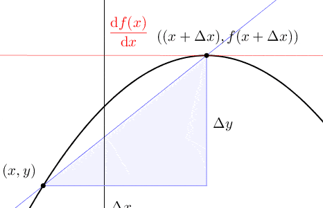
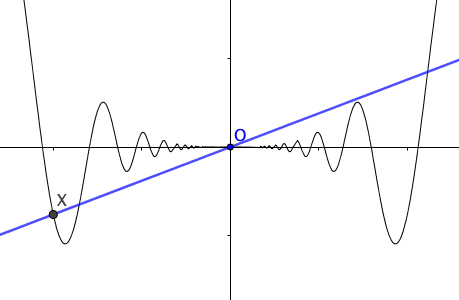
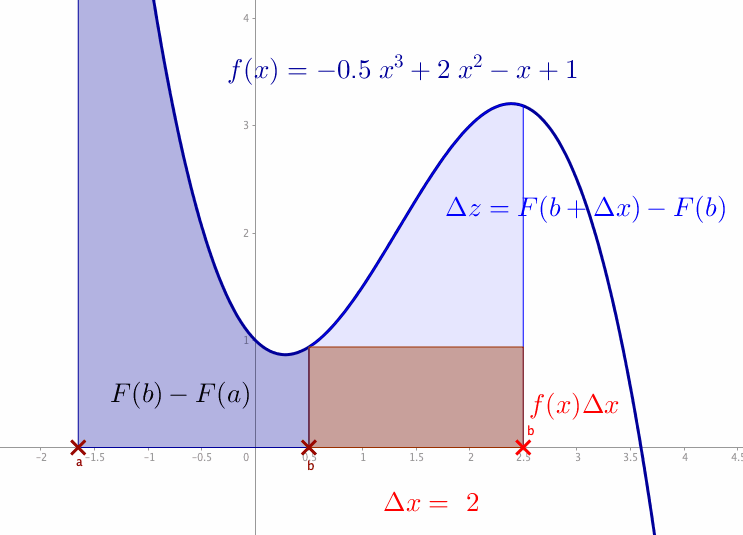
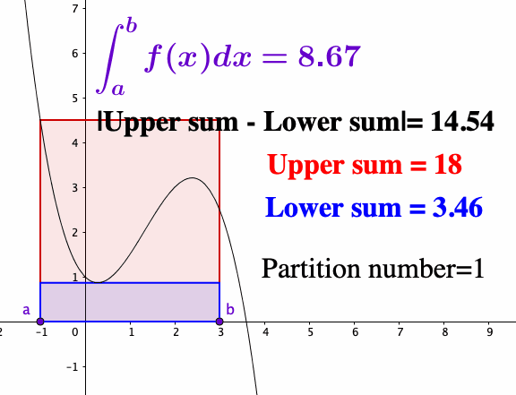
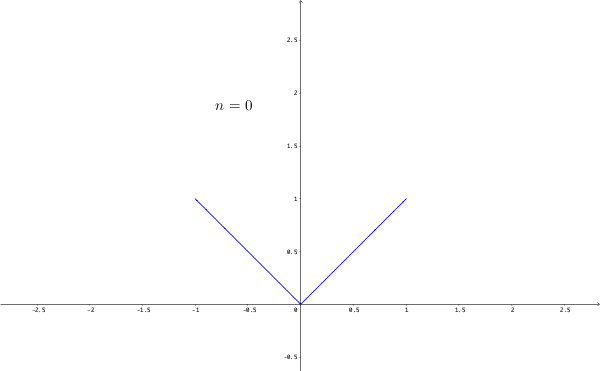
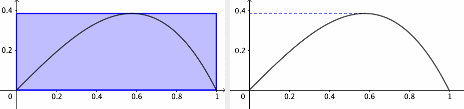
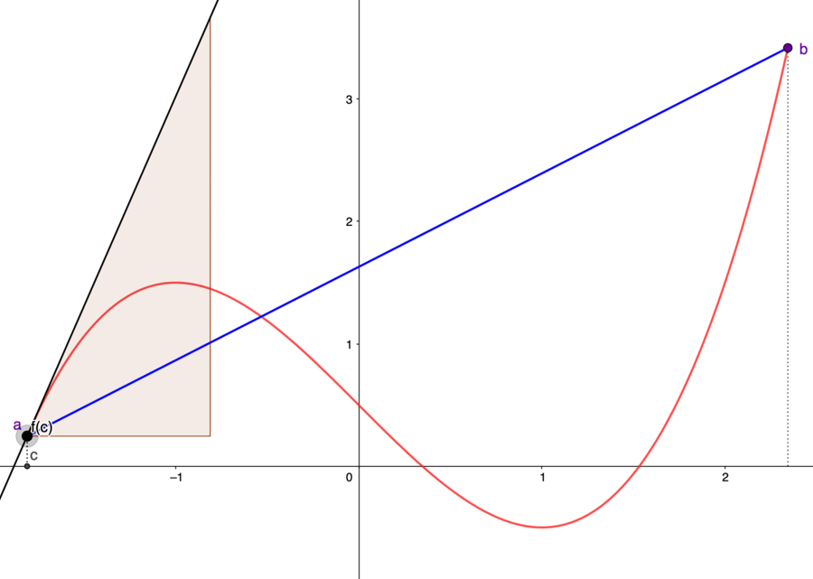
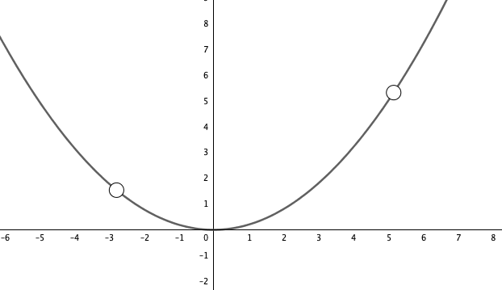
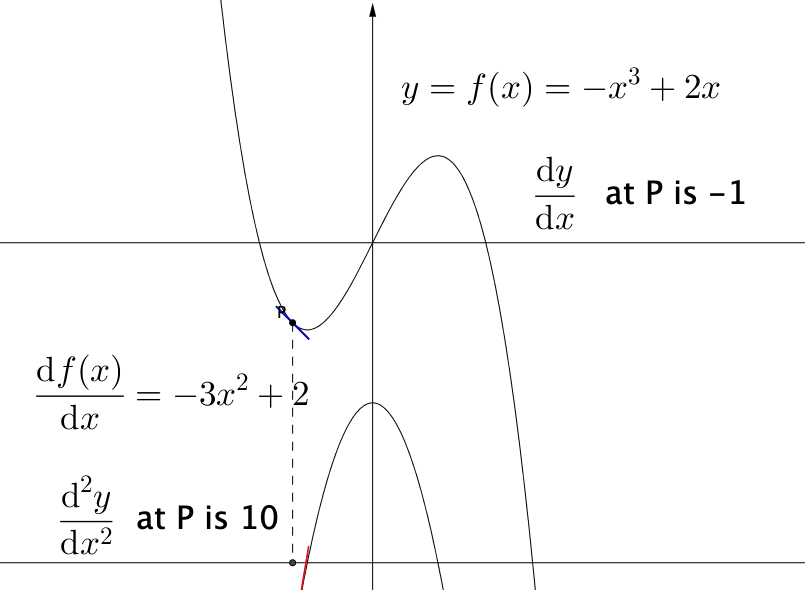
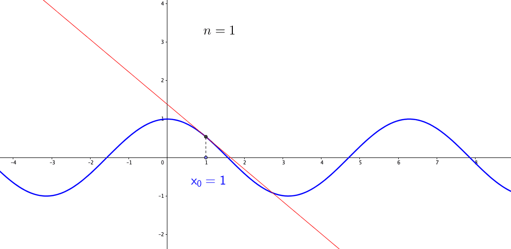

According to Aristotle’s metaphysics, “forms,” like Plato’s “ideas,” are continuous, and they become gradually more knowable. That is, after the change, the thing in question has more “form” than before, namely one idea following from another in our minds. The notion of calculus has been such a “form” that expands our understanding of infinitesimal change. When changes occur in continuous “form,” they obtain both local and global properties. Infinitesimal changes happen locally in lines, curves, space, time, and lives through presumably continuous matters and forms. Common sense would have suggested to us that there has been none. Still, continuous observation indicates that, on the global level, where the infinitesimals accumulate to a sensible magnitude, there has. This reciprocal relationship of infinitesimal changes is studied as operations of differentiation and integration in the framework of calculus, a system of rules and algorithms for computation.
Historically, the emergence of the idea about infinitesimal changes was against those conservative opinions of holding elementary properties invariant. In the early 17th century Europe, infinitesimal was a subject of political and religious controversies, for which clerics in Rome even issued a ban.86 Perhaps the most famous scathing attack on the infinitesimal was given by Geroge Berkeley, a Bishop of Cloyne. He said, “what are these same evanescent Increments? They are neither finite Quantities nor Quantities infinitely small, nor yet nothing. May we not call them the Ghosts of departed Quantities?” Despite resistance, Newton demonstrated that infinitesimal is the basic language to derive his logic of nature. Calculus began with the study of the infinitesimal changes. The changes firstly referred to changes in direction or position, now the changes could be the diffusion of knowledge or epidemic, the fluctuation of price or social stability, etc.
Newton and Leibniz independently invented and developed calculus in the late 17th century. Newton showed that a small set of his equations - laws of motion and gravity- could explain the mysterious patterns in the solar system, a system of the universe. These equations demonstrated the power of reason and ushered in the Enlightenment. Nowadays, cause and effect in the natural world are viewed as “forms” in calculus, with one truth following from another by deduction logic. Calculus, as a logical engine, allows us to deduce the law of nature and to investigate changes in other concepts beyond the physical world.
Differentiation
Let’s take a loose patchwork of ideas about motion and curves and turned it into a calculus. Consider a curve described by the function \(f(x)\) for \(x\in[a,b]\). A small change in the input, \(\Delta x\), product a small change in the output, \(\Delta y=f(x+\Delta x)-f(x)\). As you can see, \(\Delta x\) is the previous infinitesimal \(\epsilon\) of the concern. Because the small change of \(y\) is also an infinitesimal, we use the notation \(\Delta x\) and \(\Delta y\) to represent \(\epsilon\) and \(f(x+\epsilon)-f(x)\). When \(y=f(x)\) is a continuous function of \(x\), the curve has no gaps or jumps in it. To measure precisely the changes, one needs to measure the change of the curve by a rate of change \(\Delta y/\Delta x\).87 In analogous to the first-order logic, the infinitesimal quantity \(\frac{f(x+\epsilon)-f(x)}{\epsilon}\) is a first-order property for the function.
Figure 7.1: Derivative
Calculus needs a definition for the limit of \(\Delta y/\Delta x\). Given a curve determined by correlated variables \(x\) and \(y\), the limit of the ratio \(\Delta y/\Delta x\) is written as \(\mbox{d}y/\mbox{d}x\), where the infinitesimal differences, or differentials \(\mbox{d}x\) and \(\mbox{d}y\), are essentially the limits of \(\Delta x\) and \(\Delta y\). The limit, \(\mbox{d}y/\mbox{d}x\) or \(\mbox{d}f(x)/\mbox{d}x\) is called the derivative. Asking for a derivative is more than asking for continuity. The reason is fundamental, \[\begin{align*} \mbox{Continuous}: \; &\lim_{\Delta x\rightarrow0} \Delta y=\lim_{\Delta x\rightarrow0}\left(f(x+\Delta x)-f(x)\right)=0, \\ \mbox{Derivative}: \; & \lim_{\Delta x\rightarrow0}\frac{\Delta y}{\Delta x}=\lim_{\Delta x\rightarrow0}\frac{f(x+\Delta x)-f(x)}{\Delta x}=\frac{\mbox{d}f(x)}{\mbox{d}x}.\end{align*}\] The requirement of continuity asks that \(\Delta y\) goes to zero when \(\Delta x\) goes to zero.88 One can present this requirement by the definition of continuity: \(\Delta y\) is the \(\epsilon\)-neighborhood of \(f(x)\), namely \(\mathcal{B}_{\epsilon}(f(x))\). For continuity, the \(\epsilon\)-neighborhood must contain the image \(f(\Delta x)\) of \(\Delta x\). When \(\Delta x\rightarrow0\), the continuity implies that \(\Delta y\rightarrow0\). But for derivative, the requirement is that \(\Delta y\rightarrow0\) “as fast as” \(\Delta x\rightarrow0\), so that a limit exists.
If \(\Delta y\) goes faster than \(\Delta x\) to zero, then \(\mbox{d}y/\mbox{d}x\) is always zero. On the other hand, if \(\Delta y\) goes slower, then \(\mbox{d}y/\mbox{d}x\) becomes an undefined \(\mbox{d}y/0\). This indefiniteness is what Berkeley objected to. Berkeley question simply asked: Is \(\mbox{d}x\) zero or not? If it is, then \(\mbox{d}y/0\) is not allowed because you can’t divide something by zero. But if \(\mbox{d}x\) is not zero, then some kind of error must be made in passing from \(\Delta y/\Delta x\) to \(\mbox{d}y/\mbox{d}x\). To clarify Berkeley’s confusion, let’s consider a curve \(y=f(x)=x(1-x^{2})\) for \(x\in[0,1]\). When we increase \(x\) to \(x+\Delta x\), \(\Delta y\) becomes \[\begin{align*} & (x+\Delta x)\left(1-(x+\Delta x)^{2}\right)-(x-x^{3}) \\ =&x+\Delta x-\left(x^{3}+3x^{2}\Delta x+3x(\Delta x)^{2}+(\Delta x)^{3}\right)-x+x^{3}\\ =&\Delta x-3x^{2}\Delta x-3x(\Delta x)^{2}-(\Delta x)^{3}.\end{align*}\] Then dividing \(\Delta y\) by \(\Delta x\), we have \[\frac{\Delta x-3x^{2}\Delta x-3x(\Delta x)^{2}-(\Delta x)^{3}}{\Delta x}=1-3x^{2}-3x(\Delta x)-(\Delta x)^{2}.\] Now taking the limit of \(\Delta x\) gives us \(1-3x^{2}\), which is the answer of \(\mbox{d}f(x)/\mbox{d}x\). As you can see, what Berkeley missed is that the derivative contains two limits: \(\Delta x\rightarrow0\) and \(\Delta y/\Delta x\rightarrow\mbox{d}y/\mbox{d}x\) rather than just one \(\Delta x\rightarrow0\). We need to ensure that the limit of \(\Delta y/\Delta x\) exists. That is, \(\Delta y\) goes to zero “as fast as” \(\Delta x\) does.
Figure 7.2: Tangent lines
For a curve \(y=f(x)\), \(\mbox{d}y/\mbox{d}x\) or \(\mbox{d}f(x)/\mbox{d}x\) represents the slope of the curve. This suggests, except the linear case where the slope is a constant, the slopes vary as the variable \(x\) changes; and we can regard the slope as a function of \(x\), just like \(\mbox{d}f(x)/\mbox{d}x=1-3x^{2}\) in above example. Rates of change can no longer be mere numbers, but functions. When we emphasize the slope at the corresponding point \(x_{0}\), we use the notation \(\left.\frac{df(x)}{dx}\right|_{x=x_{0}}\). When the derivative \(\mbox{d}f(x)/\mbox{d}x\) exists on a set \(\mathcal{X}\), we say \(f\) is differentiable on \(\mathcal{X}\). When \(f\) is differentiable at \(x_{0}\), we define the tangent line to \(f\) at \(x_{0}\) to be the linear function \(f(x_{0})+\left.\frac{df(x)}{dx}\right|_{x=x_{0}}(x-x_{0})\). When \(f\) is differentiable at \(x_{0}\), the tangent line passes through the point \((x_{0},f(x_{0}))\) with slope \(\left.\frac{df(x)}{dx}\right|_{x=x_{0}}\).89 The tangent line is the best linear approximation to \(f(x)\) for \(x\) very close to \(x_{0}\). Figure 7.2 shows the linear approximation of \(x\sin(1/x)\) at \(x_0=0\).
The differentiation rules and useful derivatives are summarized as follows.
Sums and constant factors : Let \(f(x)=a u(x)+b v(x)\), where \(a\) and \(b\) are constants. \[\frac{\mbox{d}f(x)}{\mbox{d}x}=a\frac{\mbox{d}u(x)}{\mbox{d}x}+b\frac{\mbox{d}v(x)}{\mbox{d}x}.\]
Products (and power) : Let \(f(x)=u(x)\cdot v(x)\).90 For example, if \(y=x^{2}=x\times x\), then \(\mbox{d}y/\mbox{d}x=2x\). By induction, if \(y=x^{n}\) for any positive integer \(n\), \[\frac{\mbox{d}y}{\mbox{d}x}=n x^{n-1}.\] This is also known as the power rule. \[\frac{\mbox{d}f(x)}{\mbox{d}x}=u(x)\frac{\mbox{d}v(x)}{\mbox{d}x}+v(x)\frac{\mbox{d}u(x)}{\mbox{d}x}.\]
Quotients : Let \(f(x)=u(x)/v(x)\).91 For example, if \(y=x^{-n}=1/x^{n}\), then \[\frac{\mbox{d}y}{\mbox{d}x}=\frac{-nx^{n-1}}{x^{2n}}=-n x^{-n-1}.\] \[\frac{\mbox{d}f(x)}{\mbox{d}x}=\left(v(x)\frac{\mbox{d}u(x)}{\mbox{d}x}-u(x)\frac{\mbox{d}v(x)}{\mbox{d}x}\right)/v^{2}(x).\]
Inverse functions : Let \(y=f(x)\) and \(x=f^{-1}(y)\).92 For example, \(y=x^{1/2}\) is the inverse function of \(x=y^{2}\). \[\frac{\mbox{d}y}{\mbox{d}x}=\frac{1}{\mbox{d}x/\mbox{d}y}=\frac{1}{2y}=\frac{x^{-1/2}}{2}.\] \[\frac{\mbox{d}y}{\mbox{d}x}=1/\left(\frac{\mbox{d}x}{\mbox{d}y}\right)\,\, \mbox{ for } \frac{\mbox{d}x}{\mbox{d}y}\neq0.\]
Exponential and logarithm functions :\[\frac{\mbox{d}\mbox{e}^x}{\mbox{d}x}= \mbox{e}^{x}, \mbox{ and } \frac{\mbox{d}\ln x}{\mbox{d}x}=\frac{1}{x}.\]
Trigonometric function : \[\frac{\mbox{d}}{\mbox{d}x}\sin x=\cos x, \,\,\mbox{ and }\, \frac{\mbox{d}}{\mbox{d}x}\cos x=-\sin x.\]
Composite function (chain rule) : Let \(y=h(x)=f\circ g(x)\) and let \(z=g(x)\) \[\frac{\mbox{d}h(x)}{\mbox{d}x}=\frac{\mbox{d}f(z)}{\mbox{d}z}\frac{\mbox{d}z}{\mbox{d}x}.\]
Proof of the differentiation rules
Differentiation characterizes many “first-order” properties in various disciplines. For example, marginality in economics that interprets the infinitesimal discrepancy in the value of goods and services, basically means taking a derivative. Let \(y=f(x)\) be the cost of production with \(x\) units input. Then \(\Delta y/\Delta x\) is the average cost per extra unit. When \(\Delta x\rightarrow0\), the cost becomes the marginal cost that is \(\mbox{d}y/\mbox{d}x\). The terminology elasticity in economics is “marginal” divided by “average”. Let \(y\) denote the demand and \(x\) denote the price. The elasticity of the demand function \(y=f(x)\) is\[\lim_{\Delta x\rightarrow0}\frac{\Delta y/y}{\Delta x/x}=\frac{\mbox{d}y/\mbox{d}x}{y/x},\] which also represents the relative change in \(y\) divided by the relative change in \(x\).
Integration
The inverse operation of differentiation is called integration. Differentiation is all about finding the steepness of a curve. Undoing differentiation is a way of finding the area. An integral is defined as a limit related to the “area” covered by the function. In other words, integration is a problem of adding up infinitely many areas, each of which is infinitesimally small.
Figure 7.4: Integral
For a given function \(y=f(x)\), we want to compute the area between the \(x\)-axis and the curve. Let us denote the area between the curve \(f(x)\) as \(z=F(x)\). For an interval \([a,b]\), the area between the curve \(f(x)\) and the interval \([a,b]\) is \(F(b)-F(a)\). Consider that the segment \((x,f(x))\) in figure 7.4 moves towards the right. Consequently, if \(x\) increases by \(\Delta x\), the area increases by \(\Delta z=F(x+\Delta x)-F(x)\) (the light blue area between the curve and \(x\)-axis), which is approximately \(f(x)\Delta x\) (the area of the red rectangle). In the limit \(\Delta x\rightarrow \mbox{d}x\) and \(\Delta z \rightarrow \mbox{d}z\), we have \(\mbox{d}z=f(x)\mbox{d}x\) or say \(\mbox{d}z/\mbox{d}x=f(x)\). It means that the function \(f(x)\) is the derivative of \(F(x)\), namely \[\frac{\mbox{d}z}{\mbox{d}x}=\frac{\mbox{d}F(x)}{\mbox{d}x}=f(x).\] The integral is the inverse operation of the differentiation \[\int_{a}^{b}f(x)\mbox{d}x=F(b)-F(a).\] The total blue area in figure 7.4 comes from the integration (denoted by \(\int\)) of \(f(x)\) over the interval \([a,b]\).
Let’s construct the integration from scratch. Starting with the function \(f\) on \([a,b]\), we partition \([a,b]\) into small subintervals. On each subinterval \([x_{k-1},x_{k}]\), we pick some point \(c_{k}\in[x_{k-1},x_{k}]\) and use the \(f(c_{k})\) as an approximation for \(f\) on \([x_{k-1},x_{k}]\). Thus the total area of all small rectangles is given by the so-called Riemann sum \[z_{n}=f(c_{1})\Delta x_{1}+f(c_{2})\Delta x_{2}+\cdots+f(c_{n})\Delta x_{n}\] where \(z_{n}-z_{n-1}=f(c_{n})\Delta x_{n}\). The accuracy of the Riemann sum approximation improves as the rectangles get thinner. When we take the limit \(\Delta x_{i}\rightarrow0\) for all \(i\), the width of the subintervals of the partitions tends to zero; if the limit exists, we have \[\lim_{n\rightarrow\infty}\underset{n-\mbox{partition}}{\underbrace{\left(f(c_{1})\Delta x_{1}+\cdots+f(c_{n})\Delta x_{n}\right)}} = \int_{a}^{b}f(x)\mbox{d}x.\] This limit is called the Riemann integral. Thus the derivative is the inverse operation of the integral, much as the difference is the inverse operation to addition.
Figure 7.5: Riemann sum
As you can see, the quality of the Riemann sum approximation is directly related to whether \(f(c_{k})\) well approximates \(f(x)\) as \(x\) ranges over the subintervals. Intuitively, it helps to visualize a particular upper sum as an overestimate for the value of the integral and a lower sum as an underestimate. As the partitions get more refined, the upper sums get potentially smaller while the lower sums get potentially larger. A function is integrable if the upper and lower sums “meet” at some common value in the middle. For a “reasonable” function, these upper and lower estimates will converge to a common value as the partition is made finer and finer; in this case, we say the Riemann integral exists.
Existence of Riemann sum
A statement about the inverse relationship between differentiation and integration is given by the fundamental theorem of calculus.93 The word “fundamental” emphasizes that this is the central result connecting differential and integral calculus.
Because integrations are the inverse operations of differentiations, the rules of integrations can be derived from the differentiation rules.94 Here are some useful integral results: \[\begin{align*}\int x^{n}\mbox{d}x &=\frac{x^{n+1}}{n+1}+C, \\ \int\frac{1}{x}\mbox{d}x &=\ln x+C, \\ \int \mbox{e}^{x}\mbox{d}x &=\mbox{e}^{x}+C, \\ \int\cos x\,\mbox{d}x &= \sin x+C, \\ \int\sin x \mbox{d}x &=-\cos x+C. \end{align*}\] We will mention other specific rules once we need them. At the moment, we only need to pay attention to one more thing: The integral of \(\mbox{d}f(x)/\mbox{d}x\) is \(f(x)+C\) where \(C\) is some constant that needs to be determined by some initial condition. To see this, suppose we know the value of \(f(a)\), then \[\int_{a}^{x}\frac{\mbox{d}f(t)}{\mbox{d}t}\mbox{d}t=f(x)-f(a)=f(x)+C\] where \(C=-f(a)\).
Nowhere differentiable function
The relationship between continuity and differentiability leads to fruitful results but also reveals several pathological counterexamples. We’ve seen that continuity is a requirement in differentiability. The absolute value function \(g(x)=|x|\) for \(x\in[-1,1]\) demonstrates that the converse of this statement is not true. For \(x\in[-1,0)\), the derivative of \(g\) is \(-1\), and for \(x\in(0,1]\), the derivative is \(1\). The derivative is not well-defined at zero for the absolute value function. However, \(|x|\) is continuous at zero because there is no gap in the graph. A function can be continuous but not differentiable at some point. For this type of function, we can study its differentiation, excluding the non-differentiable points.
Figure 7.6: Continuous but nowhere differentiable function
The simple non-differentiable point of the absolute value function can be extended to infinite positions. This extension can lead to a function being continuous on the whole real line but not being differentiable at every point. Figure 7.6 gives a fractal constructed by the continuous function \(g(x)=|x|\).95 Let’s copy \(g(x)=|x|\) to the whole \(\mathbb{R}\) (extend \(g(x)=|x|\) as a periodic function on \(\mathbb{R}\)). Then, we define a sequence of functions \(g_{i}(x)=(0.75)^{i}g(4^{i}x)\). In each iteration \(i\), we take this extended function, choose the input position four times the previous position, and scale the magnitude by a factor \(0.75\). Then this iteration will generate a fractal feature. Now we define a function \(f\) as the sum of all these self-similar functions such that \(f_{n}(x)=\sum_{i=0}^{n}g_{i}(x)\). The figure shows that zigzags happen almost everywhere on the real line. These zigzags make the function nowhere differentiable but preserve the continuity. The same type of zigzags can be found in the financial charts, such as stock market prices, foreign exchange rates, etc. The standard differentiation is not suitable for modeling those zigzagging phenomena. In chapter [?], a new perspective will be introduced to model the non-differentiable phenomena.
Lebesgue integral
Integration, in general, is harder than differentiation. Between local and global problems, global problems are more laborious. Integration is a global operation. However, in terms of condition, the requirement of integration does not strictly ask for continuity so it seems less restrictive.
Consider the indicator function \(f(x)=\mathbf{1}_{1}(x)\) such that \(f(x)=1\) when \(x=1\), otherwise \(f(x)=0\). This function is not continuous at \(1\). But for the integration, we can directly find out that the result \(x=1\), a singleton, will contribute \(0\) area in our calculation. This example shows that a bounded function with a single discontinuity is integrable. In fact, As long as the function only misbehaves at the discontinuities, and the discontinuous points can be isolated from the integrable domain, then the function will be integrable.
But things are more complicated when we turn to the Dirichlet’s function (see figure 6.2). For a bounded and closed interval, say \([0,1]\), we almost can guess that the area of “this integral” would be zero. Nevertheless, when we construct an arbitrary partition on \([0,1]\), any subinterval of this partition will have one as the upper bound for rationals and zero as the lower bound for irrationals. These bounds never change no matter how small the subinterval is. Therefore, Dirichlet’s function is not integrable just in the Riemann’s sense. Riemann integral fails for those functions with an infinite number of discontinuities. In the Riemann’s sense, continuous functions are integrable, functions with only a finite number of discontinuities are also integrable but functions with infinite discontinuities are not.
Figure 7.7: Riemann integral and Lebesgue integral
However, the figure 6.2 of Dirichlet’s function tells that the function must be integrable on \([0,1]\) in some sense. In fact, just like a singleton contributes zero volume to the total area, an infinite number of discontinuous points may also make zero contribution to the total area as long as the set of the discontinuous points has “zero length.” The notion of zero length or zero measure was mentioned in the discussion of the Cantor set (chapter 5.3). For Dirichlet’s function \(f\), the rational numbers on \([0,1]\) have zero length (countable), and the irrational numbers on \([0,1]\) have \(1\) length as they almost cover the whole interval (uncountable). We can define a new integral for this function: \[\begin{align*} \int_{0}^{1}f(x)\mbox{d}x &= 1\times\left[\mbox{length of set where }f=1\right] \\ &+ 0\times\left[\mbox{length of set where }f=0\right]=1\times0+0\times1=0. \end{align*}\] It means that we can extend the integrability to a set of infinite discontinuities if and only if this set has zero length (zero measure). This extended integral is called the Lebesgue’s integral.
In order to eliminate the effect of “zero length” set, we construct the Lebesgue’s integration with respect to the image of the function rather than the domain. In figure 7.7, we compare these two different senses of integrations. In the case of the Riemann integral (left), the domain is subdivided first; then, each subdivision constructs a rectangle to approximate the corresponding area covered by the function. In the case of the Lebesgue’s integral (right), the image of the function is subdivided first, then the corresponding division of the domain is found. The Lebesgue’s integral is available for more general functions than the Riemann ones.
One prominent application of differential calculus is optimization: the process of finding the function’s maximal and minimal values. First, notice that on a closed and bounded interval, the continuous function always has its maximum and minimum (extreme value property). Second, we can use the derivative to testify the (local) monotonicity of the function. The derivative is the slope of the tangent to the curve \(y=f(x)\). If \(\mbox{d}f(x)/\mbox{d}x>0\) for \(x\in(a,b)\), the function looks increasing on that interval; if \(\mbox{d}f(x)/\mbox{d}x<0\) for \(x\in(a,b)\), the function seems to decrease. Third, we can testify the (local) optimality by monotonicity. If a function is monotonic increasing on \((a,c)\) but becomes monotonic decreasing on \((c,b)\), we may guess that \(c\) is a (local) maximum point for the function. Finally, because \(\mbox{d}f(x)/\mbox{d}x>0\) on \((a,c)\) and \(\mbox{d}f(x)/\mbox{d}x<0\) on \((c,b)\), by intermediate value property, we should have \(\mbox{d}f(x)/\mbox{d}x=0\) at \(c\), which means the (local) maximum point attains zero derivative. The similar argument should also hold for the minimum. Then, we may have a criterion, namely zero derivative, for the (local) optimal points.
Figure 7.8: Fermat’s theorem and mean value theorem
Fermat in the 17th century proposed a theorem to justify the above rough procedure rigorously.96 Fermat was a lawyer and provincial judge in Toulouse who merely corresponded with major mathematicians of his day through a Franciscan friar to spread his results. By studying the refraction phenomena, Fermat guessed the light always followed the path of least resistance between any two points, (which he took to mean that it traveled along the fastest possible route). Fermat had applied his embryonic version of differential calculus to physics. This is the principle of least time (action), later known as the optimization principle. The principle believes that nature behaves most economically, and it has been found to predict the laws of mechanics correctly. Fermat’s principle revealed that optimization is woven deeply into the fabric of nature. It also expands our conception of what a rate of change is.
Proof
The theorem gives the location of possible extrema. That is, the extrema of a continuous function \(f:[a,b]\mapsto\mathbb{R}\) occur either at the endpoints or at some interior points.97 The interior set of the closed bounded interval \([a,b]\) is \((a,b)\). At the endpoints, the derivative is undefined; at the interior points, the derivative is equal to zero.
One essential consequence of Fermat’s theorem yields the mean value theorem, a fundamental approximation tool of differential calculus.
Proof
Figure 7.9: Proof of mean value theorem
Figure 7.9 gives a graphical proof of the theorem. The mean value theorem makes the geometrically plausible assertion that a differentiable function \(f\) on an interval \([a,b]\) will, at some point, attain a slope equal to the slope of the line through the endpoints. If the derivative of \(f\) is zero everywhere on the interval \([a,b]\), the mean value theorem quickly tells that \(f\) is a constant function on \([a,b]\). Also, we can rigorously justify our previous intuition of the monotonicities. For any \(a\leq x_{1}<x_{2}\leq b\), the mean value theorem says that a point \(c\) gives \[f(x_{2})-f(x_{1})=\left.\frac{\mbox{d}f(x)}{\mbox{d}x}\right|_{x=c}(x_{2}-x_{1}).\] For \(\mbox{d}f(x)/\mbox{d}x|_{x=c}>0\), we deduce that \(f(x_{2})-f(x_{1})>0\), and thus \(f\) is strictly increasing. On the other hand, for \(\mbox{d}f(x)/\mbox{d}x|_{x=c}<0\), we have a strictly decreasing \(f\). Therefore we can summarize the trend properties for a differentiable function \(f\) on \([a,b]\):
(strictly) Increasing : \(\mbox{d}f(x)/\mbox{d}x\) is (strictly) positive.
(strictly) Decreasing : \(\mbox{d}f(x)/\mbox{d}x\) is (strictly) negative.
Constant : \(\mbox{d}f(x)/\mbox{d}x=0\) for any \(x\in(a,b)\).
Figure 7.10: The first and the second derivatives
Whether the optimal point is maximum or minimum is not revealed by the (first-order) derivative but by the second-order derivative, namely the change rate of the first derivative: \[\mbox{d}\left(\frac{\mbox{d}f(x)}{\mbox{d}x}\right)/\mbox{d}x=\frac{\mbox{d}^{2}f(x)}{\mbox{d}x^{2}}.\] We illustrate the reason as follows. Let \(\mbox{d}^{2}f(x)/\mbox{d}x^{2}>0\), we know that \(\mbox{d}f(x)/\mbox{d}x\) will be increasing (an increasing function has a positive derivative). Let \(c\) be an extremum such that \(\mbox{d}f(x)/\mbox{d}x|_{x=c}=0\) by the Fermat’s theorem. If the second-order derivative is positive at \(c\), we know that at \((c-\epsilon,c+\epsilon)\) the derivative will be positive, namely \(f(x)\) will be larger than \(f(c)\) for \(x\in(c-\epsilon,c+\epsilon)\) due to the positive derivative of \(\mbox{d}f(x)/\mbox{d}x\), so this extremum point must be the minimum point in the neighborhood. (Figure 7.10).98 The second derivative tells us about the curvature of the function. If the curvature of a function is positive, this means the function’s slope is increasing, so the function must curve upward. The negative curvature means that the function curves downward.
(local) Minimum : If \(\mbox{d}f(x)/\mbox{d}x|_{x=c}=0\) and \(\mbox{d}^{2}f(x)/\mbox{d}x^{2}|_{x=c}>0\), then \(c\) is a local minimum.
(local) Maximum : If \(\mbox{d}f(x)/\mbox{d}x|_{x=c}=0\) and \(\mbox{d}^{2}f(x)/\mbox{d}x^{2}|_{x=c}<0\), then \(c\) is a local maximum.
If we take the derivative of the second derivative, we obtain the third derivative of the function. This process can be continued further to get the \(n\)-th derivative of the function: \[f^{(n)}(x)=\frac{\mbox{d}^{n}f(x)}{\mbox{d}x^{n}}=\underset{n\mbox{-derivative}}{\underbrace{\frac{\mbox{d}}{\mbox{d}x}\frac{\mbox{d}}{\mbox{d}x}\cdots\frac{\mbox{d}}{\mbox{d}x}}}f(x).\] Higher order derivatives do not have an apparent geometrical interpretation. But it is useful in applications.
Consider the following function \[f(x)=\sum_{n=0}^{\infty}c_{n}x^{n}=c_{0}+c_{1}x+c_{2}x^{2}+c_{3}x^{3}+\cdots,\] which is called the power series. A power series is continuous and differentiable at every point at which it converges. By the differentiation rule of power functions, we have \(\mbox{d}(c_{n}x^{n})/\mbox{d}x = nc_n x^{n-1}\). Then the term-by-term differentation of \(\sum_{n=0}^{\infty}c_{n}x^{n}\) gives \(\sum_{n=1}^{\infty}nc_{n}x^{n-1}\), which is another power series. By induction, power series are differentiable with an infinite number of times.
Despite the infinite terms of the power series, the series can be manipulated more or less as polynomials, a natural functional form in many situations. In fact, an appealing idea of the power series is that it can approximate almost all well-behaved functions, namely almost all infinitely differentiable functions.
Figure 7.11: Talyor series approximates the sine function
Let’s consider a function \(f(x)\) at points \(x_{0}\), \(x_{1}=x_{0}+\Delta x\), \(x_{2}=x_{0}+2\Delta x\), etc. For the point \(x_{0}\) and \(x_{1}\), we can interpolate them linearly \[f(x)\approx f(x_{0})+\frac{f(x_{0}+\Delta x)-f(x_{0})}{\Delta x}(x-x_{0})=y_{0}+\frac{\Delta y_{0}}{\Delta x}(x-x_{0}).\] Taking the limit \(\Delta x\rightarrow0\), we have the (best) linear approximation \[f(x)\approx y_{0}+\left.\frac{\mbox{d}f(x)}{\mbox{d}x}\right|_{x=x_{0}}(x-x_{0}).\] But if \(f\) is a highly nonlinear function, e.g. \(f(x)=\sin(x)\), the linear approximation above is too primitive. We can consider adding the second derivative to the approximation such that99 The coefficient \(1/2\) in the second term \[\frac{1}{2}\frac{\mbox{d}^{2}f(x)}{\mbox{d}x^{2}}\] comes from the limit of \[\begin{align*}& \lim_{\Delta x\rightarrow0}\frac{\Delta^{2}y_{0}}{(x_{1}-x_{0})(x_{2}-x_{0})}\\ =& \lim_{\Delta x\rightarrow0}\frac{\Delta^{2}y_{0}}{(\Delta x)(2 \Delta x)}\\ =& \lim_{\Delta x\rightarrow0}\frac{\Delta^{2}y_{0}}{2(\Delta x)^{2}}=\frac{1}{2}\frac{\mbox{d}^{2}f(x)}{\mbox{d}x^{2}},\end{align*}\] and the product \((x-x_{0})(x-x_{1})\) converges to \((x-x_{0})^{2}\) when \(\Delta x \rightarrow 0\). \[f(x)\approx y_{0}+\left.\frac{\mbox{d}f(x)}{\mbox{d}x}\right|_{x=x_{0}}(x-x_{0})+\frac{1}{2}\left.\frac{\mbox{d}^{2}f(x)}{\mbox{d}x^{2}}\right|_{x=x_{0}}(x-x_{0})^{2}.\] Dependent on the satisfaction of the approximation, we can keep adding higher derivatives to the function. This is a recipe for generating a power series representation using only the function in question and its derivatives. The series is called the Taylor series. For a function \(f(x)\) defined in some neighborhood of \(x_{0}\in\mathbb{R}\), Taylor series expands \(f(x)\) around the point \(x_{0}\): \[T(x)=c_{0}+c_{1}(x-x_{0})+\cdots + c_{n}(x-x_{0})^{n} +\cdots,\;\mbox{where }c_{n}=\frac{f^{(n)}(x_{0})}{n!}.\] In practice, one can only use the first \(n\) terms of the series, which we denote as \(T_{n}(x)\). Taylor series is a pointwise approximation as the representation of \(T(x)\) is expanded at the chosen point \(x_{0}\). When the point \(x_{0}\) varies, the derivatives vary so as the expansion. Figure 7.11 gives the approximation for a cosine function (an infinitely differentiable function).100 To derive a Taylor series for \(\sin(x)\) at \(x_{0}=0\), let’s set \(c_{0}=\sin(0)=0\), \(c_{1}=\cos(0)=1\), \(c_{2}=-\sin(0)/2!=0\), \(c_{3}=-\cos(0)/3!=1/3!\), etc. The series of \(\sin(x)\) is \[x-\frac{x^{3}}{3!}+\frac{x^{5}}{5!}-\frac{x^{7}}{7!}+\cdots.\] Taylor series is less likely to converge for those \(x\) that are far from the chosen point \(x_{0}\). Although the formulae give good approximations in certain cases, in general, they fail to control the approximation error because the functions are not approximated uniformly; the error grows beyond the interpolation points or the expansion point. The general idea of approximations and applications will be given in chapter [?].
Page built: 2020-08-30